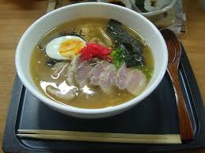
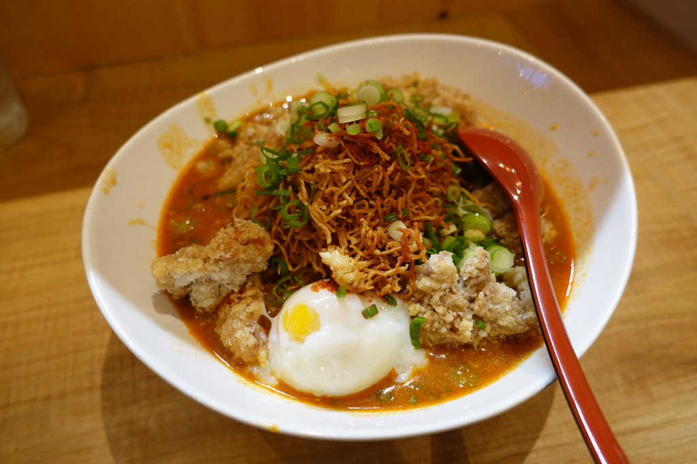

Yuki’s Ramen House
Our Menu
Appetizers
- Gyoza (6 pcs) - $6.99
Pan-fried dumplings filled with pork and veggies
- Edamame - $4.99
Steamed soybeans with sea salt
Salads
- Seaweed Salad - $5.99
Marinated seaweed with sesame dressing
- Spicy Cucumber Salad - $5.49
Crisp cucumbers with chili oil
Entrees
- Tonkotsu Ramen - $13.99
Rich pork broth, chashu pork, soft-boiled egg, nori, and scallions
- Shoyu Ramen - $12.99
Soy-based broth with chicken, bamboo shoots, and spinach
- Miso Ramen - $13.49
Savory miso broth with ground pork, corn, and butter

Tonkotsu Ramen - Our most popular dish

Miso Ramen - Packed with umami
Desserts
- Mochi Ice Cream - $4.99
Sweet rice cakes filled with ice cream
Beverages
- Green Tea - $2.99
- Ramune Soda - $3.49